| images/units/abominant.webp | Abominant1.jpg | Genestealer Cults — เนื้อเรื่อง |
 | images/units/acolyte.webp | Inquisitor.jpg | Imperial Agents — เนื้อเรื่อง |
 | images/units/air-caste.webp | Air_Caste_Pilot.jpg | T'au Empire — เนื้อเรื่อง |
 | images/units/al-cultists.webp | ApostatePriest.jpg | Alpha Legion — เนื้อเรื่อง |
 | images/units/allarus.webp | Custodes_terminators.jpg | Adeptus Custodes — เนื้อเรื่อง |
 | images/units/ancient.webp | Iron_Hawks_Primaris_Ancient_Mini.png | Codex Astartes — คัมภีร์ของ Space Marine · Space Marines — เนื้อเรื่อง |
 | images/units/apothecary.webp | Primaris_Apothecary.jpg | Codex Astartes — คัมภีร์ของ Space Marine · Space Marines — เนื้อเรื่อง |
 | images/units/archon.webp | Archon_Vraesque_Malidrach.png | Drukhari — เนื้อเรื่อง |
 | images/units/arco-flagellant.webp | Arcoflagellant.jpg | Adepta Sororitas — เนื้อเรื่อง |
 | images/units/armiger.webp | Armiger_Helverin.png | Imperial Knights — เนื้อเรื่อง |
 | images/units/aspect-warriors.webp | Aspect_Warriors.jpg | Aeldari — เนื้อเรื่อง |
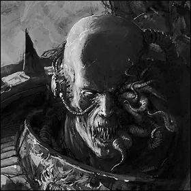 | images/units/aspiring-sorcerer.webp | Chaos_Champion.jpg | Thousand Sons — เนื้อเรื่อง |
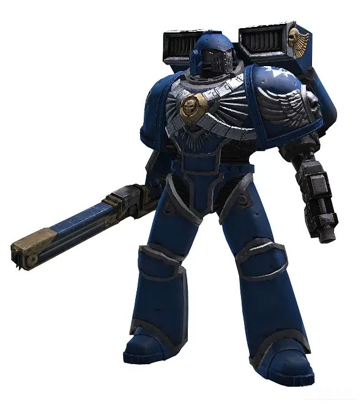 | images/units/assault-squad.webp | AssaultMarineRender.jpg | Space Marines — เนื้อเรื่อง |
 | images/units/atramentar.webp | NL_Atrementar_Terminator_Aran_Vastak.png | Night Lords — เนื้อเรื่อง |
 | images/units/autarch.webp | Saim-Hann_Autrach.png | Aeldari — เนื้อเรื่อง |
 | images/units/avatar-of-khaine.webp | Bloody-Handed_God.jpg | Aeldari — เนื้อเรื่อง |
 | images/units/battle-sisters.webp | Battle-Sister.jpg | Adepta Sororitas — เนื้อเรื่อง |
 | images/units/berzerkers.webp | WE_Berserker.jpg | World Eaters — เนื้อเรื่อง |
 | images/units/biologus-putrifier.webp | Biologus_Putrifier_Model.png | Death Guard — เนื้อเรื่อง |
 | images/units/biophagus.webp | Biophagus1.jpg | Genestealer Cults — เนื้อเรื่อง |
 | images/units/bl-chosen.webp | BlackLegionEyeofHorusArmourial.png | Black Legion — เนื้อเรื่อง |
 | images/units/black-shield.webp | DW_Black_Shield.jpg | Deathwatch — เนื้อเรื่อง |
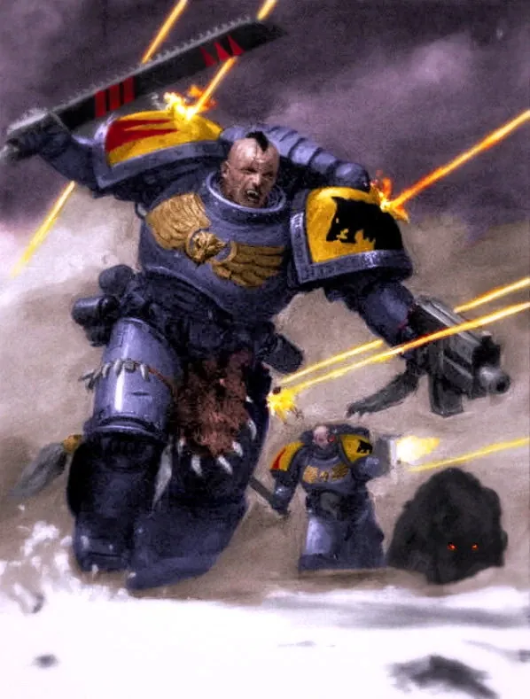 | images/units/blood-claws.webp | Blood_Claws_battle.jpg | Space Wolves — เนื้อเรื่อง |
 | images/units/bloodletters.webp | Bloodletter_b&w_sketch.jpg | Chaos Daemons — เนื้อเรื่อง |
 | images/units/bloodthirster.webp | Bloodthirster_by_columbussage-d47j02l.jpg | Chaos Daemons — เนื้อเรื่อง |
 | images/units/bonesinger.webp | Bonesinger_Miniature.jpg | Aeldari — เนื้อเรื่อง |
 | images/units/boyz.webp | SluggaBoy.png | Orks — เนื้อเรื่อง |
 | images/units/brother-captain.webp | GK_Brother_Captain2.png | Grey Knights — เนื้อเรื่อง |
 | images/units/canoness.webp | Sister_Piety.jpg | Adepta Sororitas — เนื้อเรื่อง |
 | images/units/canoptek.webp | Necron_scarabs2.jpg | Necrons — เนื้อเรื่อง |
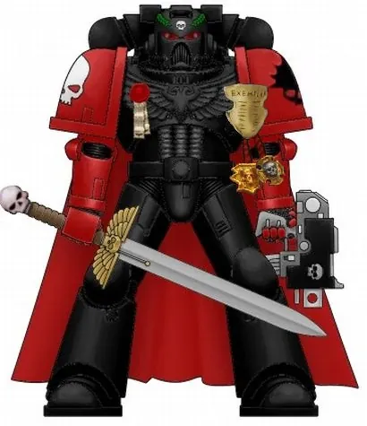 | images/units/captain.webp | Marines_Exemplar_Captain.jpg | Space Marines — เนื้อเรื่อง |
 | images/units/carnifex.webp | Tyranid_Carnifex1.jpg | Tyranids — เนื้อเรื่อง |
 | images/units/castellan.webp | Castellan_bt.jpg | Black Templars — เนื้อเรื่อง |
 | images/units/centurion.webp | UM_Assault_Centurion.png | Imperial Fists — เนื้อเรื่อง |
 | images/units/chaos-lord.webp | CSM_Lord_2.jpg | Chaos Space Marines — เนื้อเรื่อง |
 | images/units/chaos-sorcerer.webp | Chaos_Sorcerer_Assistant.jpg | Chaos Space Marines — เนื้อเรื่อง |
 | images/units/chaplain.webp | DA_Chaplain_capelan.jpg | Codex Astartes — คัมภีร์ของ Space Marine · Space Marines — เนื้อเรื่อง |
 | images/units/chapter-ancient.webp | TharciusPrimaris_Ancient.jpg | Ultramarines — เนื้อเรื่อง |
 | images/units/chapter-master.webp | Marneus_Calgar_by_Karl_Kopinski.jpg | Codex Astartes — คัมภีร์ของ Space Marine · Space Marines — เนื้อเรื่อง |
 | images/units/chosen.webp | Chaos_Chosen.png | Chaos Space Marines — เนื้อเรื่อง |
 | images/units/ck-tyrant.webp | ChaosKnightsIcon.jpg | Chaos Knights — เนื้อเรื่อง |
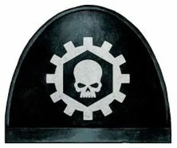 | images/units/clan-company.webp | Clan_Avernii_SP.png | Iron Hands — เนื้อเรื่อง |
 | images/units/commissar.webp | Commissar.jpg | Astra Militarum — เนื้อเรื่อง · องค์กรลับและกองกำลังพิเศษ |
 | images/units/company-champion.webp | WS_Company_Champion.png | Codex Astartes — คัมภีร์ของ Space Marine · Space Marines — เนื้อเรื่อง |
 | images/units/contemptor.webp | Death_Guard_Legion_Contemptor_Pattern_Dreadnought.jpg | Adeptus Custodes — เนื้อเรื่อง |
 | images/units/corvus-blackstar.webp | CorvusBlackstar03.jpg | Deathwatch — เนื้อเรื่อง |
 | images/units/coryphaus.webp | Post-Heresy_Daemon_Head.jpg | Word Bearers — เนื้อเรื่อง |
 | images/units/crisis.webp | Battlesuit1.JPG | T'au Empire — เนื้อเรื่อง |
 | images/units/crusader-squad.webp | BT_Crusader_Squad.png | Black Templars — เนื้อเรื่อง |
 | images/units/cryptek.webp | Cryptek-0.jpg | Necrons — เนื้อเรื่อง |
 | images/units/ctan-shard.webp | Deceiver_Shard.jpg | Necrons — เนื้อเรื่อง |
 | images/units/cultists.webp | ApostatePriest.jpg | Chaos Space Marines — เนื้อเรื่อง |
 | images/units/custodian-guard.webp | Custodians.png | Adeptus Custodes — เนื้อเรื่อง |
 | images/units/daemon-engine.webp | Chaos_beasts_break_marine's_line.jpg | Chaos Space Marines — เนื้อเรื่อง |
 | images/units/daemon-prince.webp | Daemon_prince_by_corbella.jpg | Chaos Daemons — เนื้อเรื่อง |
 | images/units/daemonettes.webp | Daemonette_of_--Slaanesh--.jpg | Chaos Daemons — เนื้อเรื่อง |
 | images/units/dark-apostle.webp | DarkApostle2.jpg | Chaos Space Marines — เนื้อเรื่อง · Word Bearers — เนื้อเรื่อง |
 | images/units/dark-disciple.webp | DarkDisciples.jpg | Word Bearers — เนื้อเรื่อง |
 | images/units/datasmith.webp | CyberneticaDatasmith.jpg | Adeptus Mechanicus — เนื้อเรื่อง |
 | images/units/death-company-dreadnought.webp | DeathCompanyDreadnought002.jpg | Blood Angels — เนื้อเรื่อง |
 | images/units/death-company.webp | DA_Co_Saltires.png | Blood Angels — เนื้อเรื่อง |
 | images/units/death-jester.webp | Death_Jester_updated.png | Harlequins — เนื้อเรื่อง |
 | images/units/deathshroud.webp | Deathshroud_-Mortarion's_Bodyguards.jpg | Death Guard — เนื้อเรื่อง |
 | images/units/deathwatch-apothecary.webp | Deathwatch-apothecary.png | Deathwatch — เนื้อเรื่อง |
 | images/units/deathwing.webp | DA_Legion_Standard_Hexagrammaton.png | Dark Angels — เนื้อเรื่อง |
 | images/units/devastator.webp | DevastatorSquadAtavian.PNG | Codex Astartes — คัมภีร์ของ Space Marine · Space Marines — เนื้อเรื่อง |
 | images/units/dialogus.webp | Sister_Dialogous.jpg | Adepta Sororitas — เนื้อเรื่อง |
 | images/units/dreadblade.webp | ChaosKnights2.jpg | Chaos Knights — เนื้อเรื่อง |
 | images/units/dreadknight.webp | DreadknightMini.jpg | Grey Knights — เนื้อเรื่อง |
 | images/units/dreadnought.webp | Venerable_Dreadnought_'Ancient_Kleitor'.jpg | Codex Astartes — คัมภีร์ของ Space Marine · Space Marines — เนื้อเรื่อง |
 | images/units/drones.webp | Gundrone.jpg | T'au Empire — เนื้อเรื่อง |
 | images/units/earth-caste.webp | Earth_Caste_Technician_.jpg | T'au Empire — เนื้อเรื่อง |
 | images/units/einhyr-champion.webp | ThurianEinhyrChampion.jpg | Leagues of Votann — เนื้อเรื่อง |
 | images/units/electro-priest.webp | Corpuscarii1.png | Adeptus Mechanicus — เนื้อเรื่อง |
 | images/units/eliminator.webp | VanguardEliminatorUltramaines.jpg | Raven Guard — เนื้อเรื่อง |
 | images/units/emperors-champion.webp | Emperor's_Champion.jpg | Black Templars — เนื้อเรื่อง |
 | images/units/enginseer.webp | Enginseer3.jpg | Adeptus Mechanicus — เนื้อเรื่อง · Astra Militarum — เนื้อเรื่อง |
 | images/units/ethereal.webp | Ethereal2.JPG | T'au Empire — เนื้อเรื่อง |
 | images/units/exalted-sorcerer.webp | Chaos_Sorcerer_Assistant.jpg | Thousand Sons — เนื้อเรื่อง |
 | images/units/fabricator-general.webp | Adeptus_Mechanicus_Seal.jpg | Adeptus Mechanicus — เนื้อเรื่อง |
 | images/units/farseer.webp | Farseer.jpg | Aeldari — เนื้อเรื่อง |
 | images/units/fire-warriors.webp | Fire_Warrior_Loresh.jpg | T'au Empire — เนื้อเรื่อง |
 | images/units/firedrakes.webp | Vanguard_Veteran.jpg | Salamanders — เนื้อเรื่อง |
 | images/units/first-acolyte.webp | Dark_creed.jpg | Word Bearers — เนื้อเรื่อง |
 | images/units/flawless-blades.webp | FlawlessBlade10thEdition.jpg | Emperor's Children — เนื้อเรื่อง |
 | images/units/flayed-ones.webp | Flayedone20.JPG | Necrons — เนื้อเรื่อง |
 | images/units/forgefather.webp | Tu'Shan_Nocturne.jpg | Salamanders — เนื้อเรื่อง |
 | images/units/freeblade.webp | Freeblade_Amaranthine_Combat.jpg | Imperial Knights — เนื้อเรื่อง |
 | images/units/gal-vorbak.webp | Argel_Tal-Lorgar's_Bodyguard.jpg | Word Bearers — เนื้อเรื่อง |
 | images/units/gargant.webp | Blood_Rippaz_Gargant.jpg | Orks — เนื้อเรื่อง |
 | images/units/genestealers.webp | Tyranid-header.jpg | Tyranids — เนื้อเรื่อง |
 | images/units/genetor.webp | Genetor.jpg | Adeptus Mechanicus — เนื้อเรื่อง |
 | images/units/gk-apothecary.webp | Grey-Knights_Apothecary.jpeg | Grey Knights — เนื้อเรื่อง |
 | images/units/gk-chaplain.webp | Grey-Knights-Chaplain.jpg | Grey Knights — เนื้อเรื่อง |
 | images/units/grand-master.webp | Grand_Master_Voldus.png | Grey Knights — เนื้อเรื่อง |
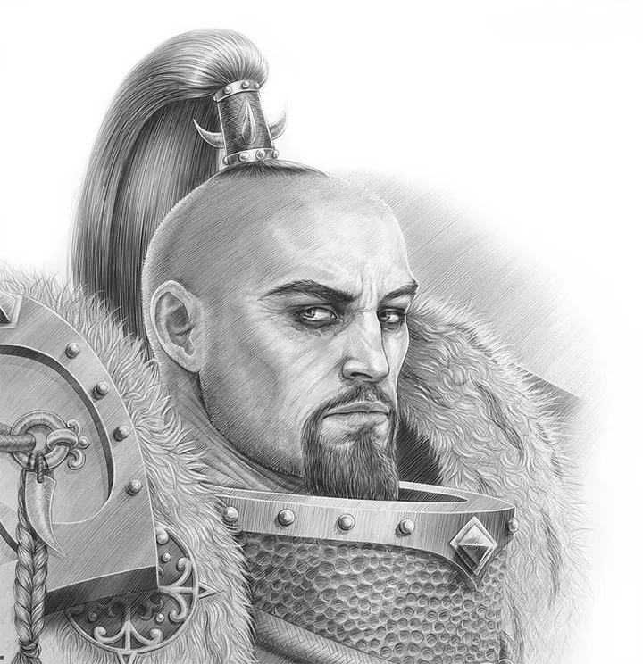 | images/units/great-khan.webp | JaghataiKhanPencil.jpg | White Scars — เนื้อเรื่อง |
 | images/units/great-unclean-one.webp | GreatUncleanOne2.png | Chaos Daemons — เนื้อเรื่อง |
 | images/units/gretchin.webp | Grot_battle.png | Orks — เนื้อเรื่อง |
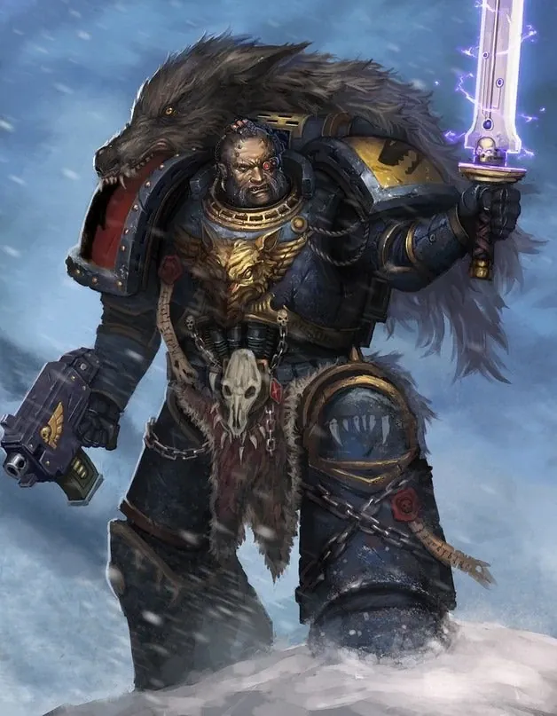 | images/units/grey-hunters.webp | Grey_Hunters_Warrior.jpg | Space Wolves — เนื้อเรื่อง |
 | images/units/grimnyr.webp | GrimnyrAncestralStaveGreaterThurianLeague.jpg | Leagues of Votann — เนื้อเรื่อง |
 | images/units/guardians.webp | Biel-Tan_Guardians_1.jpg | Aeldari — เนื้อเรื่อง |
 | images/units/haemonculus.webp | Master_Haemonculus_Urien_Rakarth.png | Drukhari — เนื้อเรื่อง |
 | images/units/harrowmaster.webp | Alpha_Legion_Astartes.jpg | Alpha Legion — เนื้อเรื่อง |
 | images/units/havocs.webp | CSM_Havocs.jpg | Chaos Space Marines — เนื้อเรื่อง |
 | images/units/headhunters.webp | AlphaLegionheadhunter.jpg | Alpha Legion — เนื้อเรื่อง |
 | images/units/hearthkyn.webp | HearthkynWarriorsGreaterThurianLeague.jpg | Leagues of Votann — เนื้อเรื่อง |
 | images/units/high-king.webp | House_Terryn_Chivalric_Livery.png | Imperial Knights — เนื้อเรื่อง |
 | images/units/hive-ship.webp | Hive_Ship.png | Tyranids — เนื้อเรื่อง |
 | images/units/hive-tyrant.webp | Hive_Tyrant_1.png | Tyranids — เนื้อเรื่อง |
 | images/units/honour-guard.webp | Ultramarine_Honour_Guard.jpg | Ultramarines — เนื้อเรื่อง |
 | images/units/hospitaller.webp | Hospitaler_Sister.jpg | Adepta Sororitas — เนื้อเรื่อง |
 | images/units/hybrids.webp | NeophyteHybrids1.jpg | Genestealer Cults — เนื้อเรื่อง |
 | images/units/imagifier.webp | Imagifier.png | Adepta Sororitas — เนื้อเรื่อง |
 | images/units/immortals.webp | Immortal_with_Gauss_Blaster.jpg | Necrons — เนื้อเรื่อง |
 | images/units/incubi.webp | Incubus_Model.jpg | Drukhari — เนื้อเรื่อง |
 | images/units/infantry-squad.webp | Img001.jpg | Astra Militarum — เนื้อเรื่อง |
 | images/units/inner-circle.webp | DAB3.jpg | Dark Angels — เนื้อเรื่อง |
 | images/units/intercessor.webp | UM_Primaris_Space_Marine.jpg | Codex Astartes — คัมภีร์ของ Space Marine · Imperial Fists — เนื้อเรื่อง · Space Marines — เนื้อเรื่อง · Ultramarines — เนื้อเรื่อง |
 | images/units/interrogator-chaplain.webp | DA_Inter_Chap.jpg | Dark Angels — เนื้อเรื่อง |
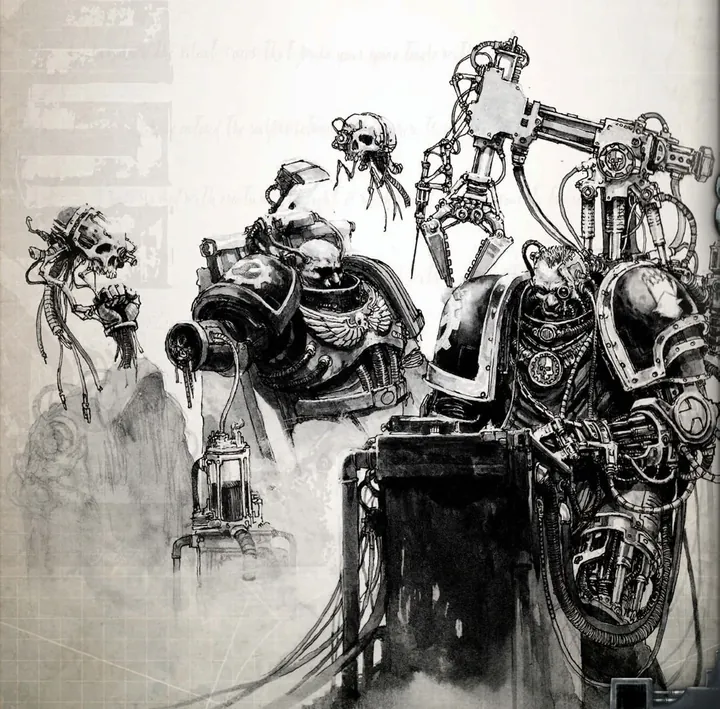 | images/units/iron-council.webp | Iron_Hands_Bionics.jpg | Iron Hands — เนื้อเรื่อง |
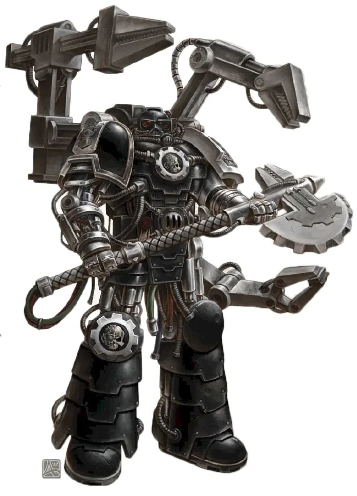 | images/units/iron-father.webp | Master_of_the_Forge_Xerill.jpg | Iron Hands — เนื้อเรื่อง |
 | images/units/iron-master.webp | BrokhyrThunderkyn.jpg | Leagues of Votann — เนื้อเรื่อง |
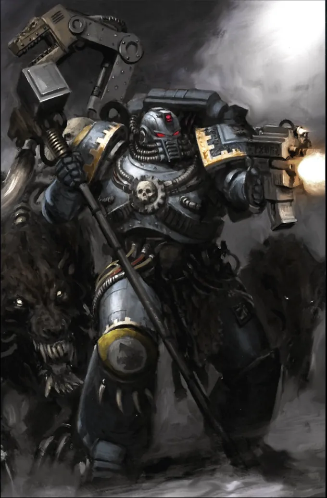 | images/units/iron-priest.webp | SW_Iron_Priest_Updated.png | Space Wolves — เนื้อเรื่อง |
 | images/units/iw-havocs.webp | CSM_Havocs.jpg | Iron Warriors — เนื้อเรื่อง |
 | images/units/iw-warpsmith.webp | Warpsmith_2.jpg | Iron Warriors — เนื้อเรื่อง |
 | images/units/justaerin.webp | Justaerin_Termi_Wargear.png | Black Legion — เนื้อเรื่อง |
 | images/units/kabalites.webp | Kabalite_Warriors_battle.png | Drukhari — เนื้อเรื่อง |
 | images/units/kahl.webp | YmyrConglometareKahlKinhost.jpg | Leagues of Votann — เนื้อเรื่อง |
 | images/units/kakophonist.webp | LordKakophonistImage1.jpg | Emperor's Children — เนื้อเรื่อง |
 | images/units/kastelan.webp | Kastelan2.png | Adeptus Mechanicus — เนื้อเรื่อง |
 | images/units/keeper-of-secrets.webp | KeeperofSecretsDaemonettes.jpg | Chaos Daemons — เนื้อเรื่อง |
 | images/units/kelermorph.webp | Kelermorph1.jpg | Genestealer Cults — เนื้อเรื่อง |
 | images/units/kill-team.webp | 829_large.jpg | Deathwatch — เนื้อเรื่อง |
 | images/units/knight-abominant.webp | KnightAbominant.jpg | Chaos Knights — เนื้อเรื่อง |
 | images/units/knight-castellan.webp | Pair_Knight_Castellan_House_Terryn.png | Imperial Knights — เนื้อเรื่อง |
 | images/units/knight-noble.webp | ThroneMechanicum2.png | Imperial Knights — เนื้อเรื่อง |
 | images/units/knight-paladin.webp | House_Krast_Knight_Errants_Battle.jpg | Imperial Knights — เนื้อเรื่อง |
 | images/units/knight-rampager.webp | KnightRampager.jpg | Chaos Knights — เนื้อเรื่อง |
 | images/units/kommandos.webp | Kommando.png | Orks — เนื้อเรื่อง |
 | images/units/kroot.webp | Kroot2.jpg | T'au Empire — เนื้อเรื่อง · เผ่าพันธุ์อื่น ๆ ในจักรวาล 40K |
 | images/units/legionaries.webp | Black_Legionnaires_New_Legion.png | Chaos Space Marines — เนื้อเรื่อง |
 | images/units/leman-russ.webp | SA_Leman_Russ_Solar-Ryza_Pattern.jpg | Astra Militarum — เนื้อเรื่อง |
 | images/units/librarian.webp | UM_Librarian_combat.png | Codex Astartes — คัมภีร์ของ Space Marine · Space Marines — เนื้อเรื่อง |
 | images/units/lictor.webp | Lictorclintlangley.jpg | Tyranids — เนื้อเรื่อง |
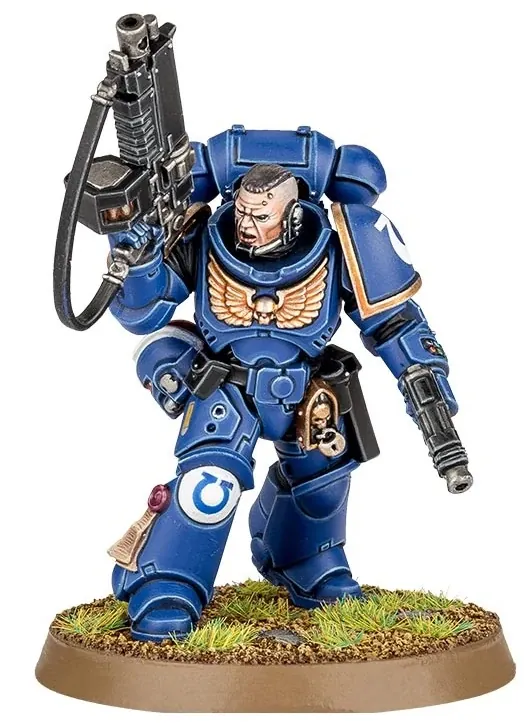 | images/units/lieutenant.webp | AutoBolter.jpg | Space Marines — เนื้อเรื่อง |
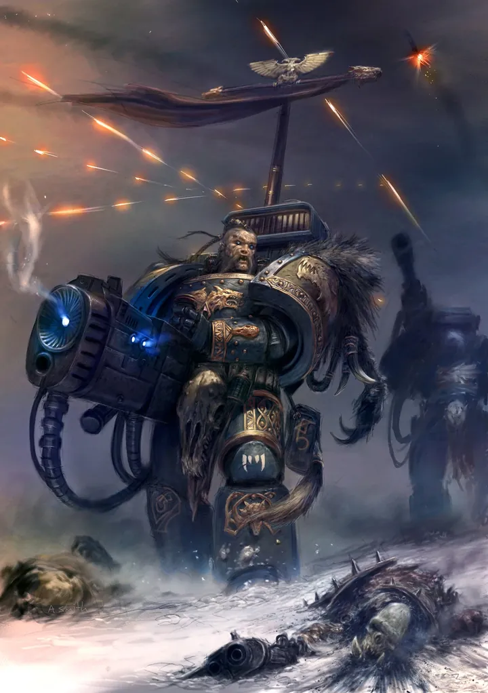 | images/units/long-fangs.webp | Long_Fangs.jpg | Space Wolves — เนื้อเรื่อง |
 | images/units/lord-exultant.webp | LordExultant10thEd..jpg | Emperor's Children — เนื้อเรื่อง |
 | images/units/lord-general.webp | ReilaVann.jpg | Astra Militarum — เนื้อเรื่อง |
 | images/units/lord-juggernaut.webp | Juggernaut_of_Khorne.png | World Eaters — เนื้อเรื่อง |
 | images/units/lord-of-change.webp | Lord_of_Change_warp_power.jpg | Chaos Daemons — เนื้อเรื่อง |
 | images/units/lord-of-contagion.webp | Death_Guard_Lord.png | Death Guard — เนื้อเรื่อง |
 | images/units/lychguard.webp | Lychguard30.JPG | Necrons — เนื้อเรื่อง |
 | images/units/magus.webp | GenestealerMagus2.jpg | Genestealer Cults — เนื้อเรื่อง |
 | images/units/mandrakes.webp | MandrakeShadows.jpg | Drukhari — เนื้อเรื่อง |
 | images/units/marshal.webp | Marshall_Deudoen-BlackTemplars.jpg | Black Templars — เนื้อเรื่อง |
 | images/units/master-of-executions.webp | MasterofExecutions.jpg | Chaos Space Marines — เนื้อเรื่อง |
 | images/units/master-of-possession.webp | MasterofPossession.jpg | Chaos Space Marines — เนื้อเรื่อง |
 | images/units/master-of-the-forge.webp | DA_Techmarine.jpg | Salamanders — เนื้อเรื่อง |
 | images/units/mech-enginseer.webp | Enginseer_of_imperium_of_Mankind.jpg | Adeptus Mechanicus — เนื้อเรื่อง |
 | images/units/mech-servitor.webp | Servitor.jpg | Adeptus Mechanicus — เนื้อเรื่อง |
 | images/units/medic.webp | Death_Korps_of_Krieg_Medic.jpg | Astra Militarum — เนื้อเรื่อง |
 | images/units/meganobz.webp | Goff_Guard.png | Orks — เนื้อเรื่อง |
 | images/units/mekboy.webp | BigMek.jpg | Orks — เนื้อเรื่อง |
 | images/units/ministorum-priest.webp | Cleric.jpg | Astra Militarum — เนื้อเรื่อง |
 | images/units/missionary.webp | Imperial_Missionary-0.png | Adepta Sororitas — เนื้อเรื่อง |
 | images/units/necron-warriors.webp | Necron_Warriors_Enmasse.jpg | Necrons — เนื้อเรื่อง |
 | images/units/nexos.webp | Nexos1.jpg | Genestealer Cults — เนื้อเรื่อง |
 | images/units/nl-lord.webp | NL_Assault.jpg | Night Lords — เนื้อเรื่อง |
 | images/units/nl-raptors.webp | Night_Lords_Saveth_Raptors.png | Night Lords — เนื้อเรื่อง |
 | images/units/nobz.webp | Nob-0.png | Orks — เนื้อเรื่อง |
 | images/units/noise-marines.webp | NoiseMarinesMinis10thEdition1.jpg | Emperor's Children — เนื้อเรื่อง |
 | images/units/obliterators.webp | Obliterator_Transforms.png | Iron Warriors — เนื้อเรื่อง |
 | images/units/ogryn.webp | Ogryn_battle2.jpg | Astra Militarum — เนื้อเรื่อง · เผ่าพันธุ์อื่น ๆ ในจักรวาล 40K |
 | images/units/operative.webp | Hydra's_Eyes.jpg | Alpha Legion — เนื้อเรื่อง |
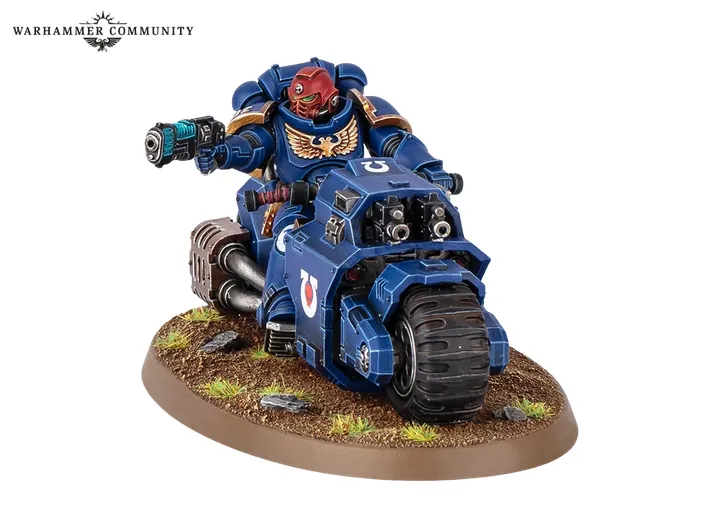 | images/units/outrider.webp | Outrider20261.png | White Scars — เนื้อเรื่อง |
 | images/units/overlord.webp | Necron_Overlord2.jpg | Necrons — เนื้อเรื่อง |
 | images/units/pain-glove.webp | Imperial_Fists_Marine.jpg | Imperial Fists — เนื้อเรื่อง |
 | images/units/painboy.webp | Ork_Mad_Dok.jpg | Orks — เนื้อเรื่อง |
 | images/units/paladins.webp | GK_Paladin.jpg | Grey Knights — เนื้อเรื่อง |
 | images/units/pathfinders.webp | Pathfinder_3.JPG | T'au Empire — เนื้อเรื่อง |
 | images/units/patriarch.webp | Patriarch.jpg | Genestealer Cults — เนื้อเรื่อง |
 | images/units/penitent-engine.webp | Penitent_Engine_colour.jpg | Adepta Sororitas — เนื้อเรื่อง |
 | images/units/phalanx.webp | Wallpaper-phalanx.jpg | Imperial Fists — เนื้อเรื่อง |
 | images/units/phobos-librarian.webp | VanguardLibrarianMini.jpg | Raven Guard — เนื้อเรื่อง |
 | images/units/pink-horrors.webp | Horrors_5th_ed.jpg | Chaos Daemons — เนื้อเรื่อง |
 | images/units/plague-marines.webp | PlagueMarineHead.PNG | Death Guard — เนื้อเรื่อง |
 | images/units/plague-surgeon.webp | Plague_Surgeon_Akim_Kaliberda.jpg | Death Guard — เนื้อเรื่อง |
 | images/units/plaguebearers.webp | Plaguebearer.png | Chaos Daemons — เนื้อเรื่อง |
 | images/units/plaguecaster.webp | Nurgle_Sorcerer_by_andreauderzo.jpg | Death Guard — เนื้อเรื่อง |
 | images/units/players.webp | Troupe_Master_Twilight.png | Harlequins — เนื้อเรื่อง |
 | images/units/possessed.webp | Daemonkin_Possessed.png | Chaos Space Marines — เนื้อเรื่อง |
 | images/units/poxwalkers.webp | Poxwalkers.png | Death Guard — เนื้อเรื่อง |
 | images/units/primaris-psyker.webp | Primaris_Psyker_IG_Battle.jpg | Astra Militarum — เนื้อเรื่อง · องค์กรลับและกองกำลังพิเศษ |
 | images/units/primus.webp | Primus1.jpg | Genestealer Cults — เนื้อเรื่อง |
 | images/units/promethean-chaplain.webp | Salamanders_Banner.jpg | Salamanders — เนื้อเรื่อง |
 | images/units/purifiers.webp | GreyKnightsPurifier.jpg | Grey Knights — เนื้อเรื่อง |
 | images/units/rangers.webp | Illic_Nightspear.jpg | Aeldari — เนื้อเรื่อง |
 | images/units/ratling.webp | Ratling2.jpg | Astra Militarum — เนื้อเรื่อง · เผ่าพันธุ์อื่น ๆ ในจักรวาล 40K |
 | images/units/ravenwing.webp | Ravenwing_Black_Knights_Battle.png | Dark Angels — เนื้อเรื่อง |
 | images/units/repentia.webp | Sister_Repentia.jpg | Adepta Sororitas — เนื้อเรื่อง |
 | images/units/retributors.webp | RetributorsBadge.JPG | Adepta Sororitas — เนื้อเรื่อง |
 | images/units/ripper.webp | Malanthrope3.jpg | Tyranids — เนื้อเรื่อง |
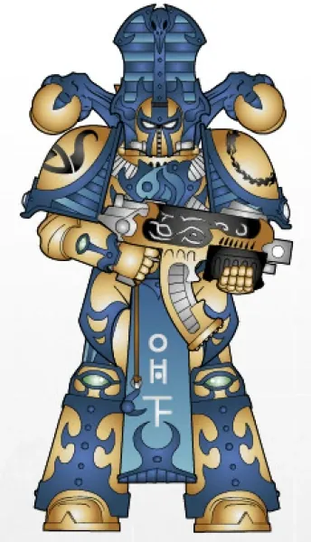 | images/units/rubric-marines.webp | Blades_of_Magnus_Rubricae_1.png | Thousand Sons — เนื้อเรื่อง |
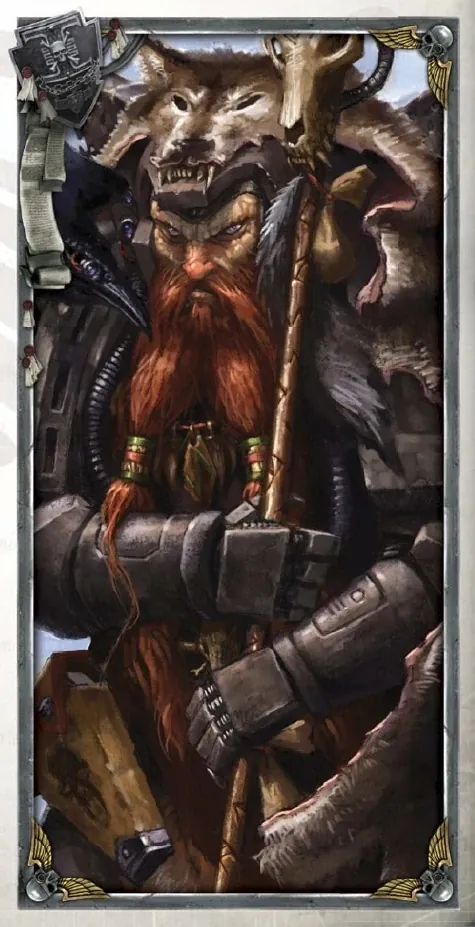 | images/units/rune-priest.webp | SW_Rune_Priest.jpg | Space Wolves — เนื้อเรื่อง |
 | images/units/runtherd.webp | Runtherd.jpg | Orks — เนื้อเรื่อง |
 | images/units/sacristan.webp | Imperial_Knights_Heraldry.jpg | Imperial Knights — เนื้อเรื่อง |
 | images/units/sanguinary-guard.webp | Sanguinary_Guard.jpg | Blood Angels — เนื้อเรื่อง |
 | images/units/sanguinary-priest.webp | BA_Sanguinary_Priest.jpg | Blood Angels — เนื้อเรื่อง |
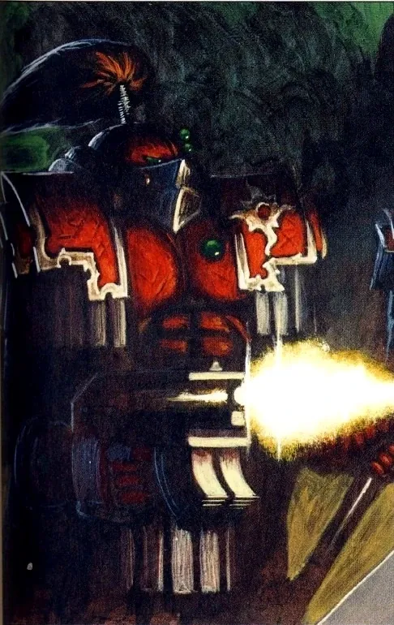 | images/units/scarab-occult.webp | Sekhmet_Terminator_Squad.jpg | Thousand Sons — เนื้อเรื่อง |
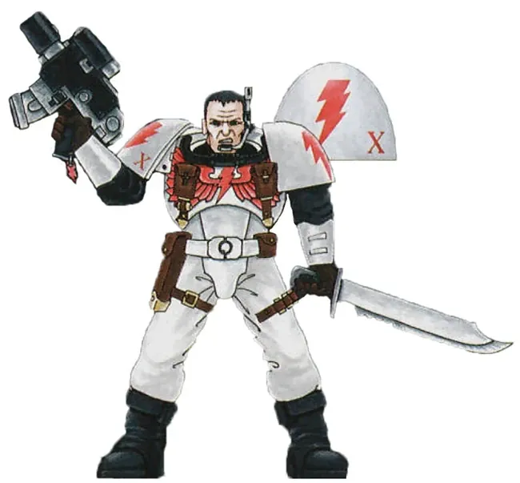 | images/units/scout.webp | WS_Scout_Marine.jpg | Space Marines — เนื้อเรื่อง |
 | images/units/seraphim.webp | Sisters_of_battle_seraphim_by_ilacha.jpg | Adepta Sororitas — เนื้อเรื่อง |
 | images/units/servitor.webp | Servitor.jpg | Codex Astartes — คัมภีร์ของ Space Marine · Space Marines — เนื้อเรื่อง |
 | images/units/shadowseer.webp | Harlequin_Shadowseer2.jpg | Harlequins — เนื้อเรื่อง |
 | images/units/shield-captain.webp | Shield-Captain_Legio_Custodes.png | Adeptus Custodes — เนื้อเรื่อง |
 | images/units/sicarian.webp | 99120116003_SicarianRuststalkers01.jpg | Adeptus Mechanicus — เนื้อเรื่อง |
 | images/units/siege-engines.webp | Defiler.png | Iron Warriors — เนื้อเรื่อง |
 | images/units/siege-master.webp | Siege_Imperial_Palace.jpg | Imperial Fists — เนื้อเรื่อง |
 | images/units/sisters-of-silence.webp | SilentSisterProsecutorBattleofProspero.png | Adeptus Custodes — เนื้อเรื่อง · Sisters of Silence — เนื้อเรื่อง |
 | images/units/skitarii.webp | MechanicusSkitarii.jpg | Adeptus Mechanicus — เนื้อเรื่อง |
 | images/units/skyweavers.webp | Skyweaver_Midnight_Sorrow_top.png | Harlequins — เนื้อเรื่อง |
 | images/units/solitaire.webp | Frozen_Stars_Solitaire_Troupe.png | Harlequins — เนื้อเรื่อง |
 | images/units/soul-grinder.webp | Khornate_Soul_Grinder.png | Chaos Daemons — เนื้อเรื่อง |
 | images/units/soulbound.webp | Ynnari_Warriors.jpg | Ynnari — เนื้อเรื่อง |
 | images/units/special-ammo.webp | SpecialIssueBolterAmmunition.png | Deathwatch — เนื้อเรื่อง |
 | images/units/spiritseer.webp | IyannaArienal.jpg | Aeldari — เนื้อเรื่อง |
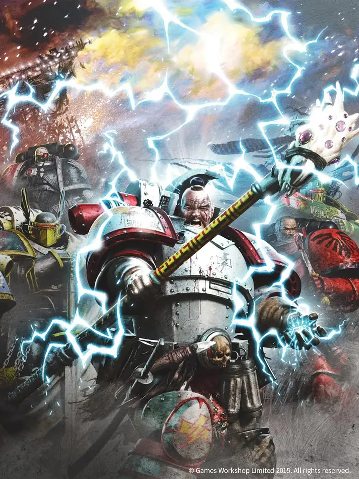 | images/units/stormseer.webp | Loyalist_Stormseer.jpg | White Scars — เนื้อเรื่อง |
 | images/units/succubus.webp | Succubi.jpg | Drukhari — เนื้อเรื่อง |
 | images/units/sword-brethren.webp | BT_Sword_Brethren_vs._Ork.png | Black Templars — เนื้อเรื่อง |
 | images/units/tallyman.webp | Tallyman_Model.png | Death Guard — เนื้อเรื่อง |
 | images/units/talos.webp | TalosPainEngine.jpg | Drukhari — เนื้อเรื่อง |
 | images/units/tech-priest-dominus.webp | MagosDominusHeresyEra.jpg | Adeptus Mechanicus — เนื้อเรื่อง |
 | images/units/techmarine.webp | Techmarine_Harkus.jpg | Codex Astartes — คัมภีร์ของ Space Marine · Space Marines — เนื้อเรื่อง |
 | images/units/tempestus-scions.webp | Tempestus_Scion_Unknown_Regt.jpeg | Astra Militarum — เนื้อเรื่อง · องค์กรลับและกองกำลังพิเศษ |
 | images/units/termagants.webp | Termagaunt_2.png | Tyranids — เนื้อเรื่อง |
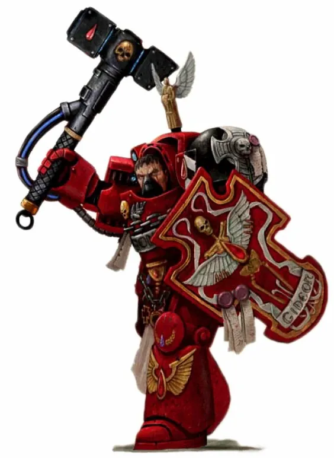 | images/units/terminator.webp | BA_1st_Co._Veteran.jpg | Space Marines — เนื้อเรื่อง |
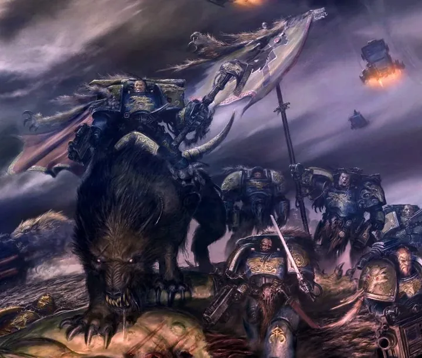 | images/units/thunderwolf-cavalry.webp | Thunderwolf_Cavalry.jpg | Space Wolves — เนื้อเรื่อง |
 | images/units/troupe-master.webp | Harlequin_Troupe_Master.jpg | Harlequins — เนื้อเรื่อง |
 | images/units/tyranid-warriors.webp | Kraken_Tyranid_Warrior.jpg | Tyranids — เนื้อเรื่อง |
 | images/units/tyrannic-war-veterans.webp | Tyrannic_War_Vet_Vet_Sgt..jpg | Ultramarines — เนื้อเรื่อง |
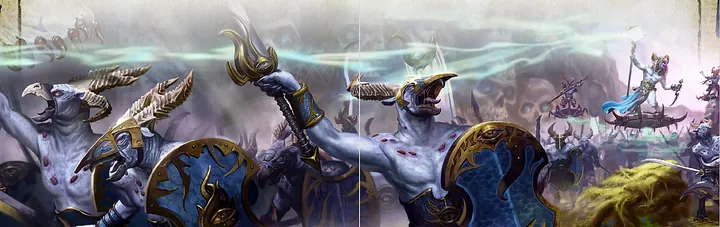 | images/units/tzaangors.webp | TzaangorWarherd.png | Thousand Sons — เนื้อเรื่อง |
 | images/units/vanguard-veterans.webp | WS_Assault_vs_Necrons.png | Raven Guard — เนื้อเรื่อง |
 | images/units/venerable-dreadnought.webp | Venerable_Dreadnought_Chaplain_Nair.png | Codex Astartes — คัมภีร์ของ Space Marine · Iron Hands — เนื้อเรื่อง |
 | images/units/vertus-praetor.webp | VertusPraetors.png | Adeptus Custodes — เนื้อเรื่อง |
 | images/units/vespid.webp | Vespid_Stingwing.jpg | T'au Empire — เนื้อเรื่อง · เผ่าพันธุ์อื่น ๆ ในจักรวาล 40K |
 | images/units/visarch.webp | Visarch.jpg | Ynnari — เนื้อเรื่อง |
 | images/units/vox-operator.webp | Vox-caster.jpg | Astra Militarum — เนื้อเรื่อง |
 | images/units/war-dog.webp | EmpyreanScytheDreadblade.jpg | Chaos Knights — เนื้อเรื่อง |
 | images/units/warboss.webp | Ork_Warboss_Boyz.png | Orks — เนื้อเรื่อง |
 | images/units/warlock.webp | Lugganath_Warlock.jpg | Aeldari — เนื้อเรื่อง |
 | images/units/warp-talons.webp | WarpTalon.jpg | Night Lords — เนื้อเรื่อง |
 | images/units/warpsmith.webp | Warpsmith_2.jpg | Chaos Space Marines — เนื้อเรื่อง |
 | images/units/warsmith.webp | Warsmith_Forrix_colour.jpg | Iron Warriors — เนื้อเรื่อง |
 | images/units/watch-captain.webp | UM_Deathwatch_Watch_Cpt..jpg | Deathwatch — เนื้อเรื่อง |
 | images/units/watch-master.webp | Deathwatch_Watch_Commander.jpg | Deathwatch — เนื้อเรื่อง |
 | images/units/watchers-in-the-dark.webp | Dark_Angels_40k_Watcher_in_the_dark.jpg | Dark Angels — เนื้อเรื่อง · เผ่าพันธุ์อื่น ๆ ในจักรวาล 40K |
 | images/units/water-caste.webp | WaterCasteIcon.jpg | T'au Empire — เนื้อเรื่อง |
 | images/units/wb-dark-apostle.webp | Dark_Apostle_WB.png | Word Bearers — เนื้อเรื่อง |
 | images/units/we-executioner.webp | MasterofExecutions.jpg | World Eaters — เนื้อเรื่อง |
 | images/units/weirdboy.webp | Agor_the_Mad_-_Ork_Weirdboy.jpg | Orks — เนื้อเรื่อง |
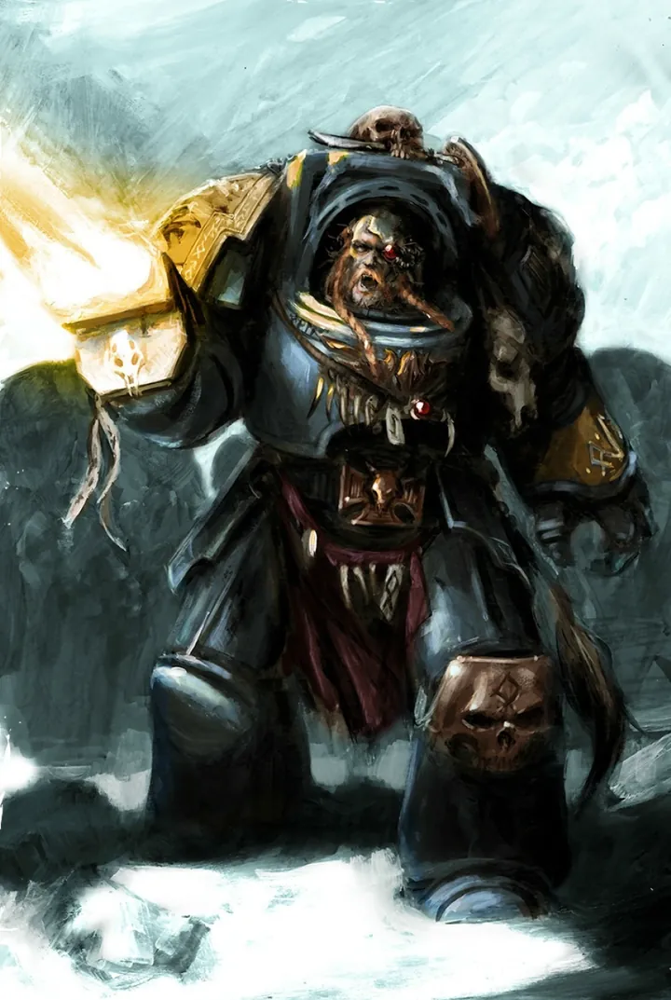 | images/units/wolf-guard.webp | SW_Wolf_Guard.png | Space Wolves — เนื้อเรื่อง |
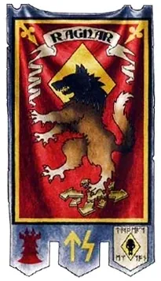 | images/units/wolf-lord.webp | Blackmane's_Banner.jpg | Space Wolves — เนื้อเรื่อง |
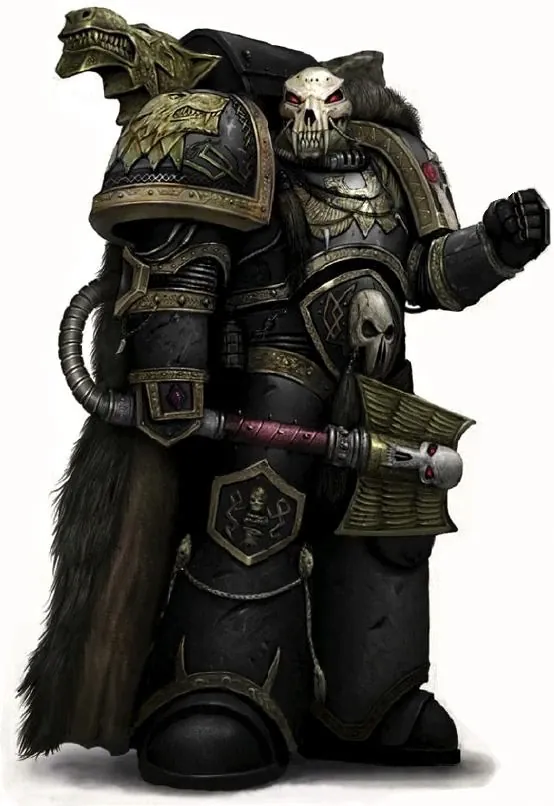 | images/units/wolf-priest.webp | SW_Wolf_Priest.jpg | Space Wolves — เนื้อเรื่อง |
 | images/units/wracks.webp | Wrack.jpg | Drukhari — เนื้อเรื่อง |
 | images/units/wraithguard.webp | Wraithguard.jpg | Aeldari — เนื้อเรื่อง |
 | images/units/wyches.webp | 443px-Lelith.png | Drukhari — เนื้อเรื่อง |
 | images/units/yncarne.webp | Yncarne.jpg | Ynnari — เนื้อเรื่อง |
 | images/units/yvraine.webp | Yvraine.jpg | เทพเจ้าแห่ง 40K · Ynnari — เนื้อเรื่อง |
 | images/units/zoanthrope.webp | Biothrope.jpg | Tyranids — เนื้อเรื่อง |